Reconhecimento e permanência
Troféus Meninas Olímpicas
Meninas olímpicas de hoje serão as mulheres nos espaços de poder amanhã. Desde 2016, olimpíadas brasileiras de diferentes áreas passaram a criar prêmios especiais para reconhecer e incentivar a participação feminina.
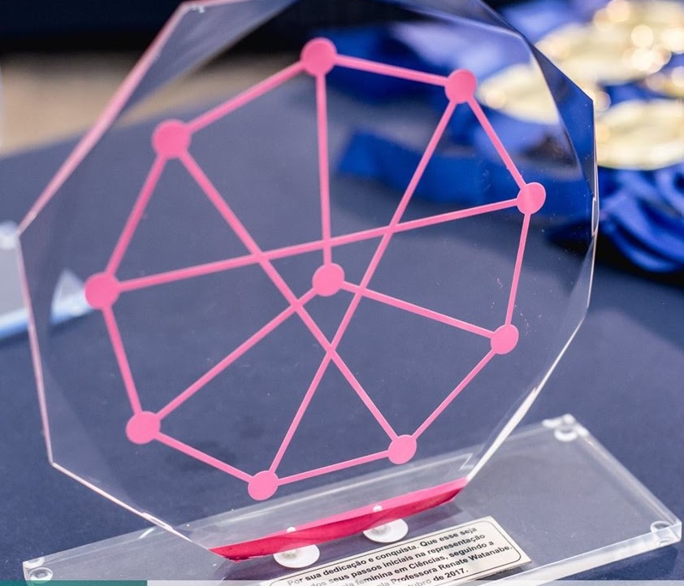
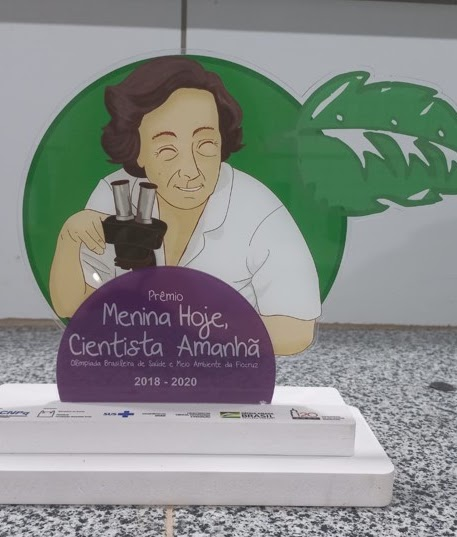
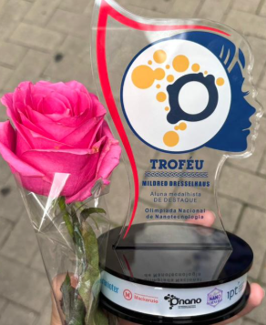
Uma mudança concreta
Prêmios especiais criados para tornar o talento feminino mais visível
Desde 2016, um total de 20 olimpíadas brasileiras criou prêmios especiais para meninas. Em 2017, a Olimpíada Internacional de Matemática também passou a conceder um reconhecimento feminino por iniciativa sugerida pelo Movimento Meninas Olímpicas.
Os troféus reunidos nesta página mostram como diferentes áreas do conhecimento transformaram o incentivo à participação feminina em uma ação permanente de reconhecimento.
Acervo de premiações
Matemática
OPM, OBM, OBMEP, Conesul e IMO.
OPM · 2016
Troféu Renate Watanabe
Primeiro prêmio especial para meninas criado por uma olimpíada brasileira.

IMO 2017 · OBMEP 2017
Troféu Meninas Olímpicas
Reconhecimento associado à expansão dos prêmios femininos na matemática olímpica.
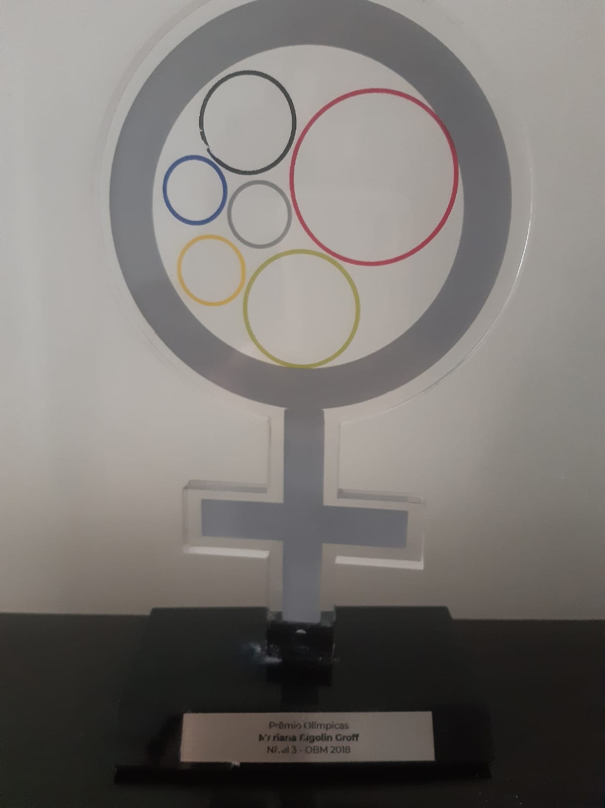
OBM · 2018
Prêmio Olímpica
Premiação feminina da Olimpíada Brasileira de Matemática.
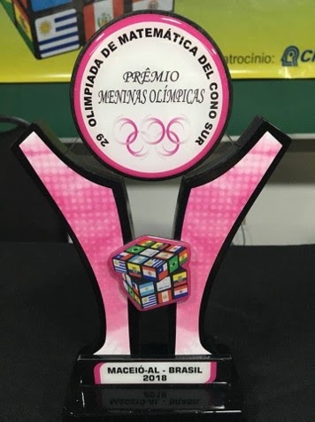
Conesul · 2018
Troféu Meninas Olímpicas
Prêmio criado na Olimpíada de Matemática do Cone Sul.
Ciências exatas
Física
OGF, OBF e OBFEP.
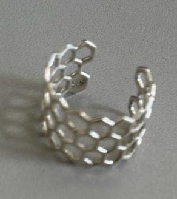
OBF · 2017
Anel Nanotubo de Carbono
Prêmio especial concedido pela Olimpíada Brasileira de Física.
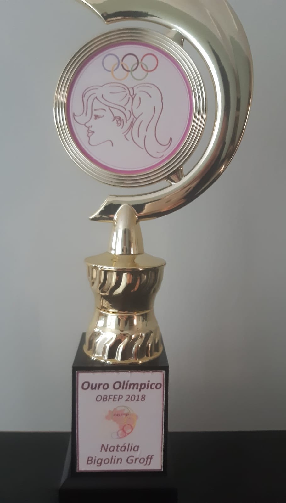
OGF · 2018
Troféu Guria Olímpica
Reconhecimento feminino da Olimpíada Gaúcha de Física.
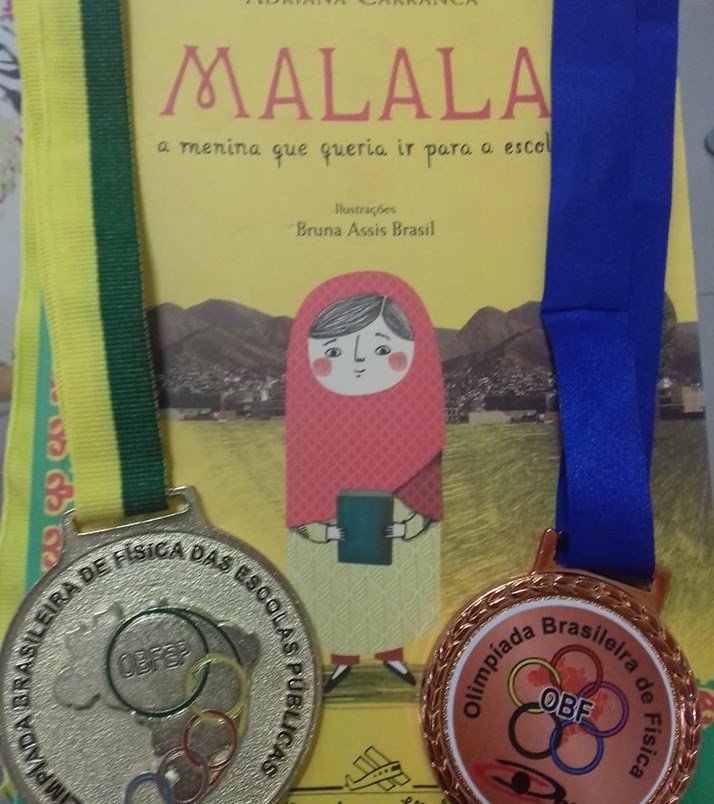
OBFEP · 2018
Prêmio Menina da Física
Premiação especial da Olimpíada Brasileira de Física das Escolas Públicas.
Ciências da natureza
Química, Biologia e Ciência
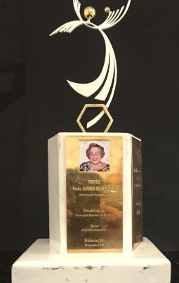
OBQ · 2018
Troféu Blanka Wladislaw
Premiação feminina da Olimpíada Brasileira de Química.
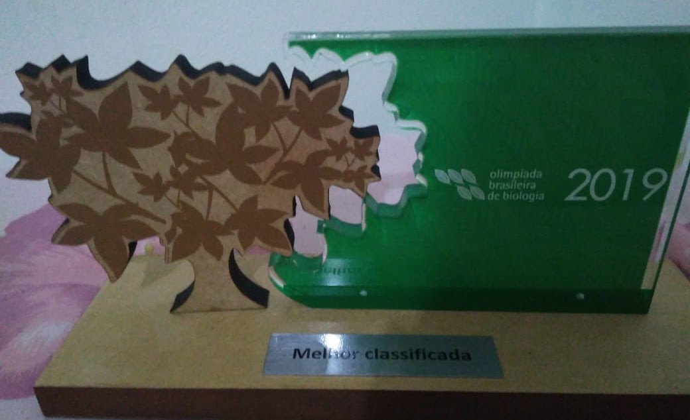
OBB · 2019
Troféu Menina da Biologia
Reconhecimento para a melhor classificada na Olimpíada Brasileira de Biologia.
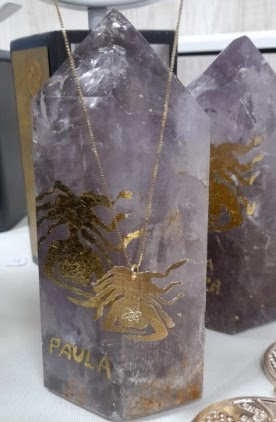
ONC · 2022
Prêmio UNFPA
Prêmio especial voltado à participação feminina na Olimpíada Nacional de Ciências.
Outras áreas do conhecimento
Saúde, Geografia, Economia e Nanotecnologia
OBSMA · 2020
Troféu Menina Hoje, Cientista Amanhã
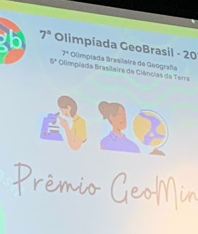
OBG · 2022
Prêmio Geomina
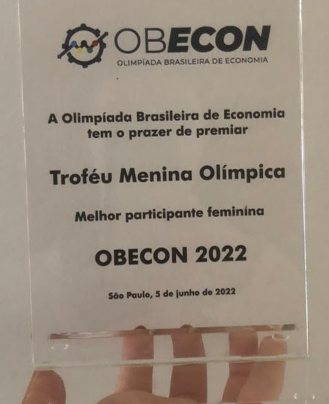
OBECON · 2022
Troféu Menina Olímpica
ONANO · 2025
Troféu Mildred Dresselhaus
A primeira a criar um prêmio para meninas
Olimpíada Paulista de Matemática
Entre 2016 e 2019, a OPM abriu uma sequência de reconhecimentos que ajudou a consolidar a criação de prêmios especiais para meninas em outras olimpíadas.
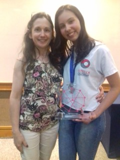
2016
Beatriz Bachani Rosa
2ª Prata
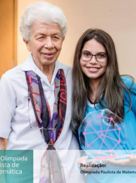
2017
Julia Emi Ivano
1ª Prata
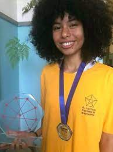
2018
Beatriz Bachani Rosa
2ª Ouro
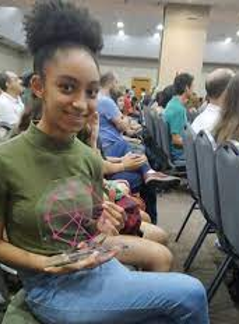
2019
Mayara de Oliveira Pinheiro
1ª Ouro
Meninas olímpicas de hoje serão as mulheres nos espaços de poder amanhã.
Desde 2016 incentivando as meninas olímpicas.